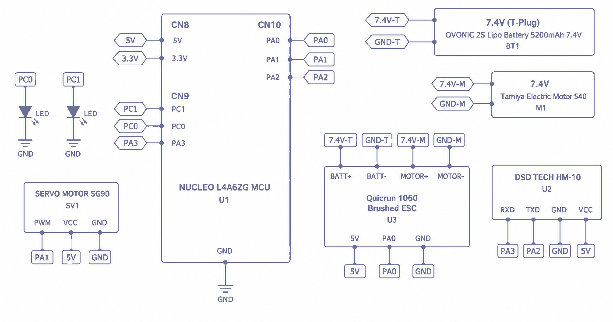
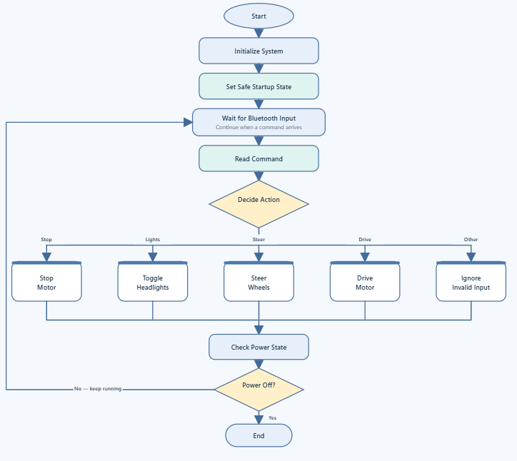

Overview
For our EE 329 final project, my team of three built an RC car from scratch: chassis, drivetrain, electronics and firmware. A phone app sends single-character commands over Bluetooth, and the STM32 turns them into PWM signals for the motor's speed controller and the steering servo.
How it works
- Wireless link. An HM-10 Bluetooth Low Energy module talks to the STM32 over USART2 at 9600 baud. Incoming characters are stored by an interrupt into a 64-character circular buffer, so no command is lost while the main loop is busy.
- Drive. A Tamiya 540 brushed motor drives the rear wheels through a 22-to-87-tooth gear reduction. A Hobbywing Quicrun 1060 ESC sets its speed and direction from a 50 Hz PWM signal on TIM2 channel 1.
- Steering. An SG90 servo on TIM2 channel 2 turns the front wheels: 2000 µs for left, 1500 µs for center and 1000 µs for right.
- Gentle throttle. Each forward or reverse command steps the ESC pulse by 2 µs, between 1550 and 1700 µs forward and 1400 and 1300 µs reverse, so the car speeds up gradually instead of jumping to full power.
- Safe start-up. On power-up the firmware sends the ESC a neutral 1500 µs pulse, centers the steering and waits 3 seconds for the ESC to arm before it accepts any commands.


Commands
| Send | What the car does |
|---|---|
| F | Start moving forward, or speed up |
| B | Start reversing, or reverse faster |
| S | Stop (neutral pulse to the ESC) |
| L / R / C | Steer left, right or center |
| H / X | Headlights on or off |
Firmware structure
The code is split into modules by peripheral: bluetooth.c for the UART and receive buffer, timer.c for the ESC PWM, servo.c for steering, led.c for the headlights and delay.c for SysTick timing. main.c initializes everything, then loops forever reading commands from the buffer and dispatching them.

The build
- ~25 minestimated runtime on a 5200 mAh 2S LiPo
- 2.8 lbtotal weight, 276 × 239 × 67 mm
- $184total parts cost, including tax
The motor and ESC run straight from the 7.4 V battery. The ESC's built-in 5 V regulator powers the steering servo, and everything shares a common ground with the Nucleo board.